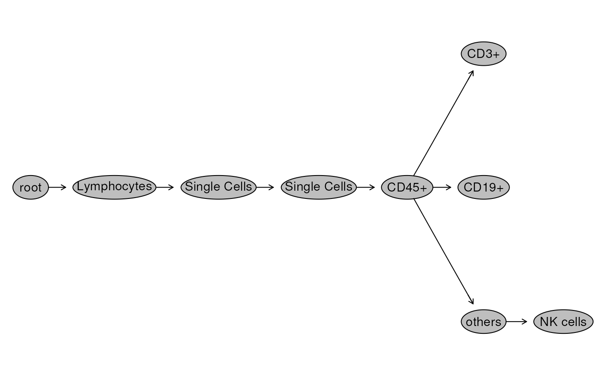
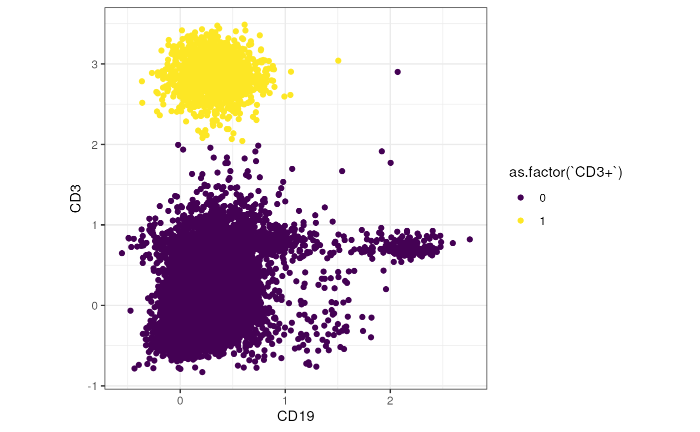

library(cyCONDOR)
library(flowWorkspace)
library(CytoML)
library(Biobase)
library(ggplot2)
library(dplyr)Within the cyCONDOR ecosystem it is possible to load a
FlowJo work space (.wsp file). This gives the advantage of having the
gating hierarchy in the fcd object. We would still
reccomend using files preprocessed as described in
vignette(“Prepare_data_for_cyCONDOR_analysis”) to be fully compatible
with all downstream analysis (e.g. cytonorm). Exported compensared files
can be loaded in FlowJo and used for gating analysis.
Read the .wsp file
First we use the CytoML package to
load the .wsp file.
ws <- CytoML::open_flowjo_xml("../.test_files/flowjo_workspace.wsp")
ws## File location: ../.test_files/flowjo_workspace.wsp
##
## Groups in Workspace
## Name Num.Samples
## 1 All Samples 3
## 2 samples 3Transformation into GatingSet object
We then transform the object to a GatingSet object.
gs <- CytoML::flowjo_to_gatingset(ws, name = "samples", path = "../.test_files/fcs_flowjo_ws/")
gs## A GatingSet with 3 samplesVisualization of the FlowJo gating strategy
We visualize the gating hierarchy and look at the cell count per gated population.
flowWorkspace::plot(gs, bool = TRUE)
flowWorkspace::gs_pop_get_stats(gs)## sample
## 1: Experiment_AID_01.fcs_1760146
## 2: Experiment_AID_01.fcs_1760146
## 3: Experiment_AID_01.fcs_1760146
## 4: Experiment_AID_01.fcs_1760146
## 5: Experiment_AID_01.fcs_1760146
## 6: Experiment_AID_01.fcs_1760146
## 7: Experiment_AID_01.fcs_1760146
## 8: Experiment_AID_01.fcs_1760146
## 9: Experiment_AID_01.fcs_1760146
## 10: Experiment_AID_02.fcs_3828740
## 11: Experiment_AID_02.fcs_3828740
## 12: Experiment_AID_02.fcs_3828740
## 13: Experiment_AID_02.fcs_3828740
## 14: Experiment_AID_02.fcs_3828740
## 15: Experiment_AID_02.fcs_3828740
## 16: Experiment_AID_02.fcs_3828740
## 17: Experiment_AID_02.fcs_3828740
## 18: Experiment_AID_02.fcs_3828740
## 19: Experiment_AID_03.fcs_4122432
## 20: Experiment_AID_03.fcs_4122432
## 21: Experiment_AID_03.fcs_4122432
## 22: Experiment_AID_03.fcs_4122432
## 23: Experiment_AID_03.fcs_4122432
## 24: Experiment_AID_03.fcs_4122432
## 25: Experiment_AID_03.fcs_4122432
## 26: Experiment_AID_03.fcs_4122432
## 27: Experiment_AID_03.fcs_4122432
## sample
## pop count
## 1: root 1760146
## 2: /Lymphocytes 259769
## 3: /Lymphocytes/Single Cells 259132
## 4: /Lymphocytes/Single Cells/Single Cells 256701
## 5: /Lymphocytes/Single Cells/Single Cells/CD45+ 243416
## 6: /Lymphocytes/Single Cells/Single Cells/CD45+/CD3+ 98595
## 7: /Lymphocytes/Single Cells/Single Cells/CD45+/CD19+ 6109
## 8: /Lymphocytes/Single Cells/Single Cells/CD45+/others 138248
## 9: /Lymphocytes/Single Cells/Single Cells/CD45+/others/NK cells 15653
## 10: root 3828740
## 11: /Lymphocytes 502723
## 12: /Lymphocytes/Single Cells 501266
## 13: /Lymphocytes/Single Cells/Single Cells 500119
## 14: /Lymphocytes/Single Cells/Single Cells/CD45+ 478517
## 15: /Lymphocytes/Single Cells/Single Cells/CD45+/CD3+ 129406
## 16: /Lymphocytes/Single Cells/Single Cells/CD45+/CD19+ 15063
## 17: /Lymphocytes/Single Cells/Single Cells/CD45+/others 333430
## 18: /Lymphocytes/Single Cells/Single Cells/CD45+/others/NK cells 14716
## 19: root 4122432
## 20: /Lymphocytes 1453126
## 21: /Lymphocytes/Single Cells 1450633
## 22: /Lymphocytes/Single Cells/Single Cells 1440203
## 23: /Lymphocytes/Single Cells/Single Cells/CD45+ 1391893
## 24: /Lymphocytes/Single Cells/Single Cells/CD45+/CD3+ 92151
## 25: /Lymphocytes/Single Cells/Single Cells/CD45+/CD19+ 12424
## 26: /Lymphocytes/Single Cells/Single Cells/CD45+/others 1286628
## 27: /Lymphocytes/Single Cells/Single Cells/CD45+/others/NK cells 22297
## pop countPrepare the data for cyCONDOR
From the GatingSet object we prepare the
fcd object using prep_fjw(). Here, we provide
the GatingSet object as input, reverse the FlowJo
tranformation, perform an autologicle transformation and remove the
parameter “Time”. Optionally, we can read in an annotation table to add
further sample information (not shown).
condor <- prep_fjw(data_gs = gs,
inverse.transform = TRUE,
transformation = "auto_logi",
remove_param = c("Time")
)## [1] "FSC-A w= 0 t= 262143"
## [1] "FSC-H w= 0 t= 166547"
## [1] "FSC-W w= 0 t= 262143"
## [1] "SSC-A w= 0.892977713264162 t= 262143"
## [1] "SSC-H w= 0 t= 257403"
## [1] "SSC-W w= 0 t= 262143"
## [1] "CD45 w= 0.400130442523775 t= 261330.171875"
## [1] "CD4 w= 0.583624943577614 t= 262054.046875"
## [1] "CD16 w= 0.583304445730326 t= 262063.21875"
## [1] "HLA-DR w= 0.526407100734133 t= 256403.078125"
## [1] "CD66b w= 0.269925173514296 t= 262130.15625"
## [1] "CD14 w= 0.520686238954203 t= 269475.84375"
## [1] "CD56 w= 0.309385967148849 t= 266870.46875"
## [1] "CD3 w= 0.777696607391664 t= 250297.484375"
## [1] "CD11c w= 0.537743667858708 t= 203113.46875"
## [1] "Siglec8 w= 0.323207654372646 t= 255847.03125"
## [1] "CD8 w= 0.654399836071111 t= 254885.03125"
## [1] "CD19 w= 0.343330229474141 t= 255034.515625"
class(condor)## [1] "flow_cytometry_dataframe"The performed FlowJo gating with the assigned cell populations is
saved in condor$anno$cell_anno.
condor$anno$cell_anno[110:115,]## expfcs_filename root Lymphocytes
## Experiment_AID_01.fcs_110 Experiment_AID_01.fcs 1 0
## Experiment_AID_01.fcs_111 Experiment_AID_01.fcs 1 0
## Experiment_AID_01.fcs_112 Experiment_AID_01.fcs 1 0
## Experiment_AID_01.fcs_113 Experiment_AID_01.fcs 1 1
## Experiment_AID_01.fcs_114 Experiment_AID_01.fcs 1 0
## Experiment_AID_01.fcs_115 Experiment_AID_01.fcs 1 1
## Lymphocytes/Single Cells Single Cells/Single Cells
## Experiment_AID_01.fcs_110 0 0
## Experiment_AID_01.fcs_111 0 0
## Experiment_AID_01.fcs_112 0 0
## Experiment_AID_01.fcs_113 1 1
## Experiment_AID_01.fcs_114 0 0
## Experiment_AID_01.fcs_115 1 1
## CD45+ CD3+ CD19+ others NK cells
## Experiment_AID_01.fcs_110 0 0 0 0 0
## Experiment_AID_01.fcs_111 0 0 0 0 0
## Experiment_AID_01.fcs_112 0 0 0 0 0
## Experiment_AID_01.fcs_113 1 1 0 0 0
## Experiment_AID_01.fcs_114 0 0 0 0 0
## Experiment_AID_01.fcs_115 1 0 0 1 0Filter for a population
We can filter our data set for a population of interest e.g. the CD45+ cells.
#select cell IDs of all CD45+ cells
keep <- condor$anno$cell_anno[condor$anno$cell_anno$`CD45+` == 1,] %>% rownames()
#check the number of CD45+ cells
length(keep)## [1] 2113826
#filter data for CD45+ cells
condor_CD45 <- filter_fcd(condor, cell_ids = keep)Simple visualization of the dataset with FlowJo gating
We can visualize the gated cell populations for example in a simple dot plot. In the plot below, we plot the fluorescence intensity of CD3 against CD19 and color the cells by the ‘CD3+’ population from the FlowJo workspace.
# subset condor to 10000 cells for visualization
condor_sub <- subset_fcd(condor_CD45, size= 10000)
#prepare data frame for plotting
tmp <- cbind(condor_sub$expr$orig, condor_sub$anno$cell_anno)
ggplot(tmp, aes(x= `CD19`, y = `CD3`, color = as.factor(`CD3+`))) +
geom_point() +
theme_bw() +
theme(aspect.ratio = 1) +
scale_color_viridis_d()
We can now continue with the usual cyCONDOR workflow
(see e.g. vignette("Dimensionality_Reduction"),
vignette("Clustering_and_cell_annotation") and
vignette("Data_Visualization").
Session Info
info <- sessionInfo()
info## R version 4.3.1 (2023-06-16)
## Platform: x86_64-pc-linux-gnu (64-bit)
## Running under: Ubuntu 22.04.3 LTS
##
## Matrix products: default
## BLAS: /usr/lib/x86_64-linux-gnu/openblas-pthread/libblas.so.3
## LAPACK: /usr/lib/x86_64-linux-gnu/openblas-pthread/libopenblasp-r0.3.20.so; LAPACK version 3.10.0
##
## locale:
## [1] LC_CTYPE=en_US.UTF-8 LC_NUMERIC=C
## [3] LC_TIME=en_US.UTF-8 LC_COLLATE=en_US.UTF-8
## [5] LC_MONETARY=en_US.UTF-8 LC_MESSAGES=en_US.UTF-8
## [7] LC_PAPER=en_US.UTF-8 LC_NAME=C
## [9] LC_ADDRESS=C LC_TELEPHONE=C
## [11] LC_MEASUREMENT=en_US.UTF-8 LC_IDENTIFICATION=C
##
## time zone: Etc/UTC
## tzcode source: system (glibc)
##
## attached base packages:
## [1] stats graphics grDevices utils datasets methods base
##
## other attached packages:
## [1] dplyr_1.1.3 ggplot2_3.4.4 Biobase_2.60.0
## [4] BiocGenerics_0.46.0 CytoML_2.12.0 flowWorkspace_4.12.2
## [7] cyCONDOR_0.1.6
##
## loaded via a namespace (and not attached):
## [1] IRanges_2.34.1 Rmisc_1.5.1
## [3] urlchecker_1.0.1 nnet_7.3-19
## [5] CytoNorm_2.0.1 TH.data_1.1-2
## [7] vctrs_0.6.4 digest_0.6.33
## [9] png_0.1-8 shape_1.4.6
## [11] proxy_0.4-27 slingshot_2.8.0
## [13] ggrepel_0.9.4 parallelly_1.36.0
## [15] MASS_7.3-60 pkgdown_2.0.7
## [17] reshape2_1.4.4 httpuv_1.6.12
## [19] foreach_1.5.2 withr_2.5.1
## [21] ggrastr_1.0.2 xfun_0.40
## [23] ggpubr_0.6.0 ellipsis_0.3.2
## [25] survival_3.5-7 memoise_2.0.1
## [27] hexbin_1.28.3 ggbeeswarm_0.7.2
## [29] RProtoBufLib_2.12.1 princurve_2.1.6
## [31] profvis_0.3.8 ggsci_3.0.0
## [33] systemfonts_1.0.5 ragg_1.2.6
## [35] zoo_1.8-12 GlobalOptions_0.1.2
## [37] DEoptimR_1.1-3 Formula_1.2-5
## [39] prettyunits_1.2.0 promises_1.2.1
## [41] scatterplot3d_0.3-44 rstatix_0.7.2
## [43] globals_0.16.2 ps_1.7.5
## [45] rstudioapi_0.15.0 miniUI_0.1.1.1
## [47] generics_0.1.3 ggcyto_1.28.1
## [49] base64enc_0.1-3 processx_3.8.2
## [51] curl_5.1.0 S4Vectors_0.38.2
## [53] zlibbioc_1.46.0 polyclip_1.10-6
## [55] randomForest_4.7-1.1 GenomeInfoDbData_1.2.10
## [57] RBGL_1.76.0 ncdfFlow_2.46.0
## [59] RcppEigen_0.3.3.9.4 xtable_1.8-4
## [61] stringr_1.5.0 desc_1.4.2
## [63] doParallel_1.0.17 evaluate_0.22
## [65] S4Arrays_1.0.6 hms_1.1.3
## [67] glmnet_4.1-8 GenomicRanges_1.52.1
## [69] irlba_2.3.5.1 colorspace_2.1-0
## [71] harmony_1.1.0 reticulate_1.34.0
## [73] readxl_1.4.3 magrittr_2.0.3
## [75] lmtest_0.9-40 readr_2.1.4
## [77] Rgraphviz_2.44.0 later_1.3.1
## [79] lattice_0.22-5 future.apply_1.11.0
## [81] robustbase_0.99-0 XML_3.99-0.15
## [83] cowplot_1.1.1 matrixStats_1.1.0
## [85] xts_0.13.1 class_7.3-22
## [87] Hmisc_5.1-1 pillar_1.9.0
## [89] nlme_3.1-163 iterators_1.0.14
## [91] compiler_4.3.1 RSpectra_0.16-1
## [93] stringi_1.7.12 gower_1.0.1
## [95] minqa_1.2.6 SummarizedExperiment_1.30.2
## [97] lubridate_1.9.3 devtools_2.4.5
## [99] plyr_1.8.9 crayon_1.5.2
## [101] abind_1.4-5 locfit_1.5-9.8
## [103] sp_2.1-1 sandwich_3.0-2
## [105] pcaMethods_1.92.0 codetools_0.2-19
## [107] multcomp_1.4-25 textshaping_0.3.7
## [109] recipes_1.0.8 openssl_2.1.1
## [111] Rphenograph_0.99.1 TTR_0.24.3
## [113] bslib_0.5.1 e1071_1.7-13
## [115] destiny_3.14.0 GetoptLong_1.0.5
## [117] ggplot.multistats_1.0.0 mime_0.12
## [119] splines_4.3.1 circlize_0.4.15
## [121] Rcpp_1.0.11 sparseMatrixStats_1.12.2
## [123] cellranger_1.1.0 knitr_1.44
## [125] utf8_1.2.4 clue_0.3-65
## [127] lme4_1.1-35.1 fs_1.6.3
## [129] listenv_0.9.0 checkmate_2.3.0
## [131] DelayedMatrixStats_1.22.6 pkgbuild_1.4.2
## [133] ggsignif_0.6.4 tibble_3.2.1
## [135] Matrix_1.6-1.1 rpart.plot_3.1.1
## [137] callr_3.7.3 tzdb_0.4.0
## [139] tweenr_2.0.2 pkgconfig_2.0.3
## [141] pheatmap_1.0.12 tools_4.3.1
## [143] cachem_1.0.8 viridisLite_0.4.2
## [145] smoother_1.1 fastmap_1.1.1
## [147] rmarkdown_2.25 scales_1.2.1
## [149] grid_4.3.1 usethis_2.2.2
## [151] broom_1.0.5 sass_0.4.7
## [153] graph_1.78.0 carData_3.0-5
## [155] RANN_2.6.1 rpart_4.1.21
## [157] farver_2.1.1 yaml_2.3.7
## [159] MatrixGenerics_1.12.3 foreign_0.8-85
## [161] ggthemes_4.2.4 cli_3.6.1
## [163] purrr_1.0.2 stats4_4.3.1
## [165] lifecycle_1.0.3 uwot_0.1.16
## [167] askpass_1.2.0 caret_6.0-94
## [169] mvtnorm_1.2-3 lava_1.7.3
## [171] sessioninfo_1.2.2 backports_1.4.1
## [173] cytolib_2.12.1 timechange_0.2.0
## [175] gtable_0.3.4 rjson_0.2.21
## [177] umap_0.2.10.0 ggridges_0.5.4
## [179] parallel_4.3.1 pROC_1.18.5
## [181] limma_3.56.2 jsonlite_1.8.7
## [183] edgeR_3.42.4 RcppHNSW_0.5.0
## [185] bitops_1.0-7 Rtsne_0.16
## [187] FlowSOM_2.8.0 ranger_0.16.0
## [189] flowCore_2.12.2 jquerylib_0.1.4
## [191] timeDate_4022.108 shiny_1.7.5.1
## [193] ConsensusClusterPlus_1.64.0 htmltools_0.5.6.1
## [195] diffcyt_1.20.0 glue_1.6.2
## [197] XVector_0.40.0 VIM_6.2.2
## [199] RCurl_1.98-1.13 rprojroot_2.0.3
## [201] gridExtra_2.3 boot_1.3-28.1
## [203] TrajectoryUtils_1.8.0 igraph_1.5.1
## [205] R6_2.5.1 tidyr_1.3.0
## [207] SingleCellExperiment_1.22.0 labeling_0.4.3
## [209] vcd_1.4-11 cluster_2.1.4
## [211] pkgload_1.3.3 GenomeInfoDb_1.36.4
## [213] ipred_0.9-14 nloptr_2.0.3
## [215] DelayedArray_0.26.7 tidyselect_1.2.0
## [217] vipor_0.4.5 htmlTable_2.4.2
## [219] ggforce_0.4.1 CytoDx_1.20.0
## [221] car_3.1-2 future_1.33.0
## [223] ModelMetrics_1.2.2.2 munsell_0.5.0
## [225] laeken_0.5.2 data.table_1.14.8
## [227] htmlwidgets_1.6.2 ComplexHeatmap_2.16.0
## [229] RColorBrewer_1.1-3 rlang_1.1.1
## [231] remotes_2.4.2.1 colorRamps_2.3.1
## [233] ggnewscale_0.4.9 fansi_1.0.5
## [235] hardhat_1.3.0 beeswarm_0.4.0
## [237] prodlim_2023.08.28